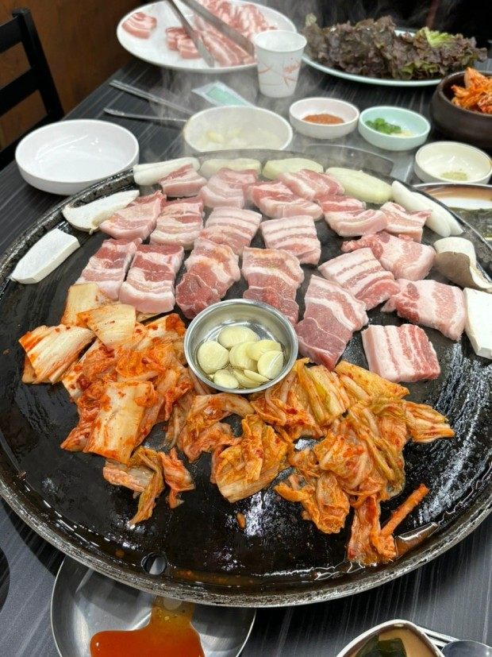
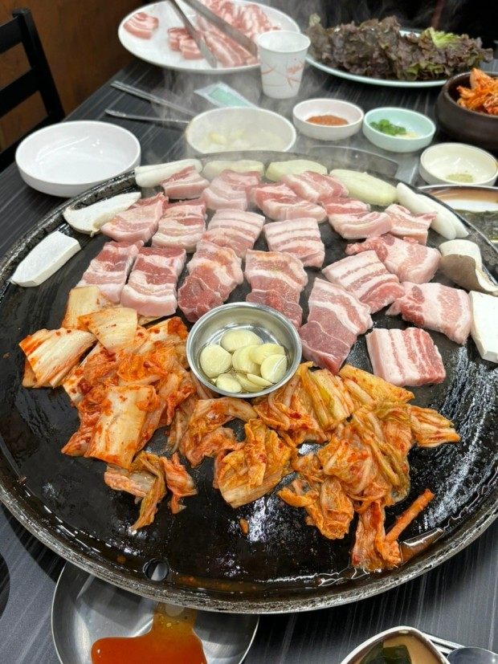

가봤던/가보고 싶은 곳
가봤던 곳
- 중국
가보고 싶은 곳
- 일본
일본
장기여행으로 오랫동안 머무르며 여러가지를 해보고 싶습니다.
좋아하는 음식
삼겹살
저는 육지에 서식하는 육고기는 다 좋아합니다 !!
좋아하는 것
자동차 드라이브
자동차 드라이브를 하다보면 잡생각이 없어지며, 눈앞에 있는것을 하나하나 처리 하기 바쁘기때문에 좋아합니다
장기여행으로 오랫동안 머무르며 여러가지를 해보고 싶습니다.
삼겹살
저는 육지에 서식하는 육고기는 다 좋아합니다 !!
자동차 드라이브
자동차 드라이브를 하다보면 잡생각이 없어지며, 눈앞에 있는것을 하나하나 처리 하기 바쁘기때문에 좋아합니다